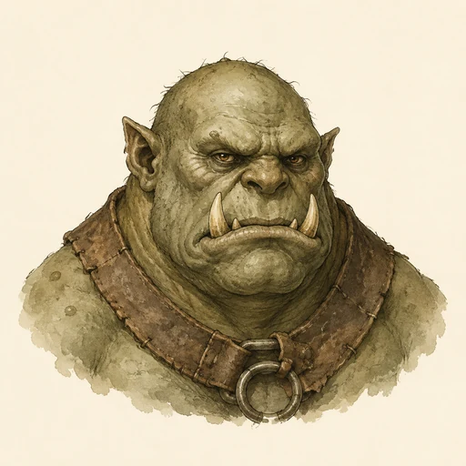
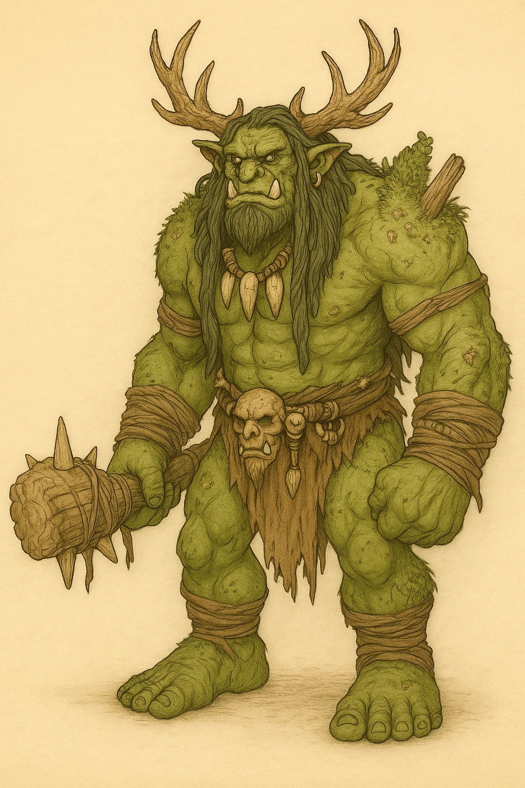
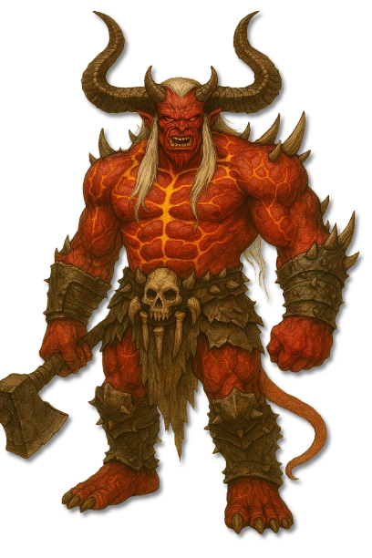
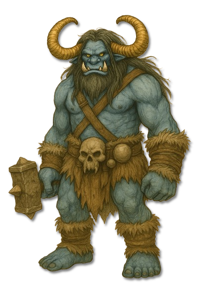
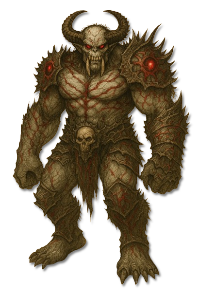
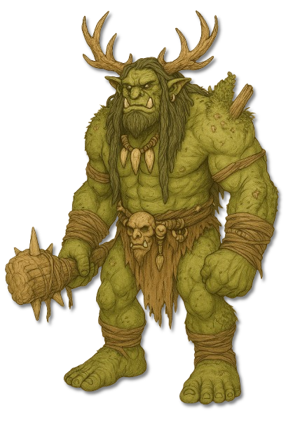

???
???
Noch keine gesicherte Überlieferung.

KreaturenarchivAleria und infernale Sphären · Heere der infernalen Herren · Archivblatt IV / 02
Infernale Krieger und grobschlächtige Spiegelbilder der Menschen
Ogroiden, bisweilen Finsteralben genannt, sind massige infernale Krieger und eine brutale Parodie auf die von den Göttlichen geschaffenen Menschen. Meist zweieinhalb bis drei Meter groß, folgen sie hierarchischen Kriegskulturen; Gestalt, Kräfte und Schwächen jeder Linie tragen unverkennbar das Wesen ihres Herren.

„Ein Ogroide trägt den Krieg nicht nur in der Hand, sondern in seiner Ordnung, seiner Sprache und in jedem Zeichen des Herren, der ihn geformt hat.“Einordnung aus dem Archiv der infernalen Heere
Sechs Merkmale · Skala 1–10
Die fünf bekannten Linien setzen unterschiedliche Kräfte ein. Diese gemeinsame Bewertung beschreibt die wiederkehrenden Merkmale ogroider Kriegskulturen.
Quelle der Einordnung: Aus Körpergröße, Nahkampfweise, hierarchischer Organisation, Bindung an infernale Herren, geringer allgemeiner Magiebegabung und begrenzter taktischer Flexibilität abgeleitet
Krieger der infernalen Herren
Fünf ogroide Linien sind namentlich und bildlich überliefert. Zehn weitere Archivstellen bleiben als ??? offen, bis gesicherte Namen und Berichte vorliegen.

Diener Dagons
Goraks sind Dagons glühende Vollstrecker: rötliche Ogroiden, deren Adern bei Wut golden aufleuchten und deren Körperhitze bereits eine Berührung zur Waffe macht.
Diener Grimnars
Ognir sind Grimnars größte sterbliche Schöpfungen und werden im Volksmund Oger genannt.

Diener Grimnars
Grimnaks sind Grimnars bevorzugte Krieger: gehörnte, frostharte Ogroiden mit grober Schmiedekunst und deutlich mehr taktischem Verstand als die kleineren Grimlinge.

Diener Bhaals
Bhalgar sind Bhaals dürre, vampirhafte Ogroiden.

Diener Zatrachs
Zaroks sind Zatrachs mächtigste sterbliche Jäger: massive, geweihtragende Ogroiden mit erdiger Tarnung, scharfem Spürsinn und überraschender Beweglichkeit.
???
Noch keine gesicherte Überlieferung.
???
Noch keine gesicherte Überlieferung.
???
Noch keine gesicherte Überlieferung.
???
Noch keine gesicherte Überlieferung.
???
Noch keine gesicherte Überlieferung.
???
Noch keine gesicherte Überlieferung.
???
Noch keine gesicherte Überlieferung.
???
Noch keine gesicherte Überlieferung.
???
Noch keine gesicherte Überlieferung.
???
Noch keine gesicherte Überlieferung.
Ogroiden wurden von den infernalen Herren als grobschlächtige und entmenschlichte Spiegelbilder der Menschen geschaffen. Übermäßige Muskulatur, rüde Gestalt und die Zeichen ihres jeweiligen Schöpfers machen sie zu sichtbaren Trägern infernaler Kriegsmacht.
In den Armeen ihrer Herren dienen sie als Vollstrecker, Eroberer, Söldner und Zerstörer. Nur wenige Linien besitzen ausgeprägte Magie; Körperkraft, Kampfkunst und ein Leben in ständiger Gewalt ersetzen diese Begabung.
Jede Linie spiegelt eine andere Herrschaft: Goraks tragen Dagons Hitze, Ognir und Grimnaks Grimnars Frost und Zorn, Bhalgar Bhaals Blutmagie und Zaroks Zatrachs Jagdtrieb. Dadurch unterscheiden sich selbst nah verwandte Ogroiden deutlich in Körperbau, Taktik und Lebensraum.
Ogroidische Gemeinschaften folgen dem Recht des Stärksten. Mächtige Krieger herrschen über Clans und schwächere Diener, während Rang in Kämpfen, Jagden oder grausamen Ritualen bewiesen wird. Diese Ordnung erzeugt Disziplin, bleibt jedoch anfällig für Rivalität und den Verlust eines Anführers.
Die Linien suchen Gebiete, die den Domänen ihrer Herren ähneln: Goraks Hitze und Kriegsruinen, Grimnars Ogroiden Frost und Gebirge, Bhalgar verborgene Ruinen und Sümpfe sowie Zaroks dichte Wildnis. Der Lebensraum ist deshalb stets ein Hinweis auf Fähigkeiten und Schwächen der dort auftretenden Ogroiden.
Ein offener Nahkampf spielt Größe, Reichweite und Ausdauer der Ogroiden aus. Beweglichkeit, Fernkampf, Fallen und eine zur jeweiligen Linie passende Magie sind verlässlicher; besonders wichtig bleibt, Kampfplatz und Anführer zu kontrollieren, bevor eine Schlachtreihe geschlossen vorrückt.
Gemeinsame Regeln ersetzen keine Artenkenntnis. Feuer bedroht Grimnars frostgeprägte Linien, während es einen Gorak stärkt oder unberührt lässt. Bhalgar verlangen Licht und göttliche Kräfte, Zaroks wiederum verlieren ihren größten Vorteil, wenn Spuren und Gelände gegen sie arbeiten.